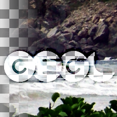

Weighted Blend
blend two images using alpha values as weights
pads: aux input output
parent-class: GeglOperationPointComposer
categories: compositors blend
OpenCL
source: operations/common/weighted-blend.c
 This page is part of the online GEGL Documentation, GEGL is a data flow based image processing library/framework, made to fuel GIMPs high-bit depth non-destructive editing future.
This page is part of the online GEGL Documentation, GEGL is a data flow based image processing library/framework, made to fuel GIMPs high-bit depth non-destructive editing future.